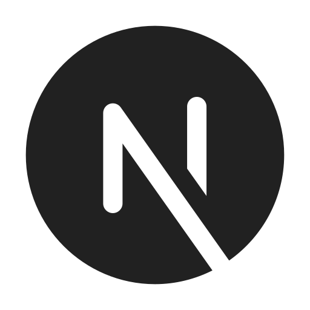

技術スタック
言語
フレームワーク・ライブラリ
 Next.js 15 (App Router)
その他
PostgreSQL
提案もできるフルスタックなエンジニアを目指しています
新卒から法人向けの営業・マーケティング、新規サービスの企画立ち上げなど事業運営のフロント面を一気通貫で経験してきました。 現在はモダンなweb技術やAIを活かし、自分のアイデアをカタチにするフルスタック開発に取り組んでいます。 将来的には、企画・開発・グロースすべてに関われるプロダクトマネージャーを目指しています。
Job: 営業企画 → 新規サービス企画 → 法人営業・マーケティング
Like: 筋トレ、ボードゲーム、ポーカー、アニメ鑑賞、ストリートダンス、ハンドボール